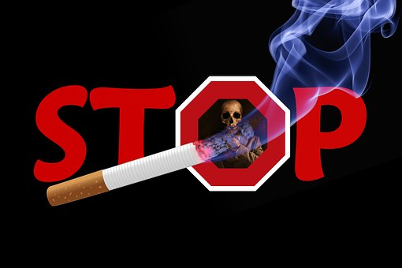

It is not practically possible to prevent people from taking drugs, but we can all take practial steps to help others, whether they are friends, family members, workmates or neighbours to stop substance abuse. By sharing this piece of information with others, we can all help somebody to avoid drug abuse or help somebody to stop indulging in drugs altogether. Substance abuse is partcularly rife in teenage youth and can negatively affect their education, careers and even relationships if left unaddressed. substance abuse comes in many forms: alcohol abuse; marijuana; sniffing glue; illicit drugs like broncleer etc.
Signs That Intervention Is needed
When you see your loved one having these signs, it is high time to seek for help:
- Your loved one is showing classical signs of substance dependence
- You feel he is a danger to himself or others.
- You feel that nothing else seems to matter to him/ her except the substances thet are indulging in
- Slurred speech
- Staring into space
- Bloodshot eyes
- Anxiety
- Lack of concentration
- Lack of coordination
- Walking difficulties
- Repeating the same statements oner and over again
Useful Tips
- Parental monitoring has always proved to be the most effective method in preventing the onset of substance abuse.
- Schools that have strong monitoring systems have also proved to be effective in controlling abuse.
- Special attention should be paid to underage use of legal drugs such as alcohol and tobacco, illicit street drugs, inhalants and the inappropriate use of legal drugs such as prescription and over the counter drugs.
- Programs addressing substance abuse must be designed to meet specific needs of the audience i.e, having specialized programs for different genders, ages, cultures and ethnicities so that the programs are more effective.
- Peer pressure has been the biggest reason teens start using drugs is because their friends utilize peer pressure. It all starts as a way to hang out and usually as a way not to be left out, or simply to fit in, they end up being influenced by their peers. it is important to avoid peer pressure at all costs.
- Avoid stressful situations. Some people are really caught up with the stress of work and family that they end up not having time for recreation and the little time that they get they end up drinking alcohol. this may progress into abuse. inorder to avoid stress, loneliness or boredom, people should consider helping with voluntary work or other activities where they get to socialize with others.
- Mental illness and substance abuse are often related. Those with a mental illness may turn to drugs as a way to ease the pain. Those suffering from some form of mental illness, such as anxiety, depression or post-traumatic stress disorder should seek the help of a trained professional for treatment before it leads to substance abuse.
- Risk factors may range from biological or physical. identifying the risk factors may be very helpful with dealing with substance abuse. Knowledge of family history of drug abuse can help identify the onset of the problem.
- Keeping a healthy lifestyle is important as people in most cases start taking drugs as an escape from some other problems they may be facing eg, the loss of a family member or employment.
-
If someone is putting too much pressure on you to do something which you know is not right, dtsnd your ground and say, "NO!" You have to resist everything that you know is not good. Walk away from bad influence, even if it means losing friends.
Be warry of the type of friends you hang out with. If the people whom you are hanging out with are drinking alcohol or taking any other intoxicating substances, you may need to find yourself new friends.
- Family relationships are very crucial. You need to have elderly people who you feel free to talk about drugs and just about everything tou are going through.
- Always try to engage yourself in things that you enjoy. Dont feel lonely or bored. Try out some new things: sport, art, volunteer for community activities etc.
- Always take the family guidelines about alcohol as you grow up as it helps you to be responsible for whatever actions you take. Avoid taking advise about alcohol from your peers who happen to be the same age as you are. Chances are high that you will end up succumbing to peer pressure and eventually be an addict.
- Get the right information about alchohol. Dont rely on the information tou get on the internet or your friends. if you acquire the right information you protect yourself from misconceptions that arise from ignorance.
- Avoid over-the-counter medications and do not overdose on prescription drugs.
- Always be in control of your life, dont live that responsibility to someone else as there is a probability that they will ruin it for you!
- Speak Out/Speak Up/Take Control: Be the one others look up to for advice, help and the right information
- Get help!: If you suspect that you or anyone around you is in any kind of trouble, call for help!
Where To Find Help
www.treatmentsolutions.com
Tollfree: (888) 493-5874
Tollfree: (855) 826-4464
www.drugabuse.com
Tollfree: 1-877-582-6061
www.addictioncenter.com
Tollfree: (855) 488-2697
Deuteronomy 31:6
"Be strong and of a good courage, fear not, nor be afraid of them:for the LORD thy God,he it is that doth go with thee; he will not fail thee,nor forsake thee."